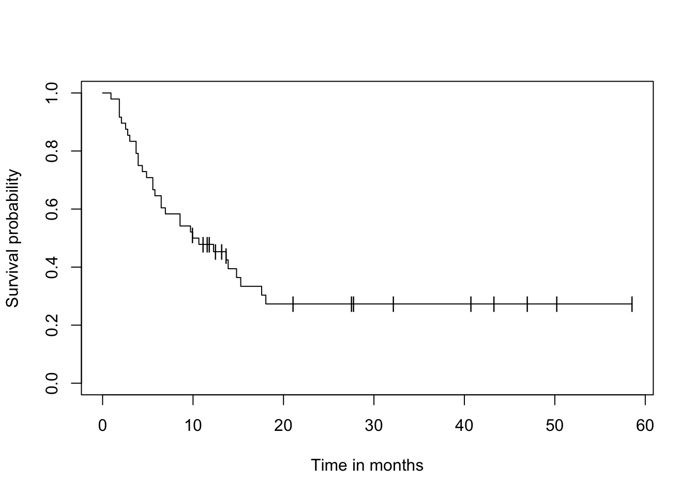
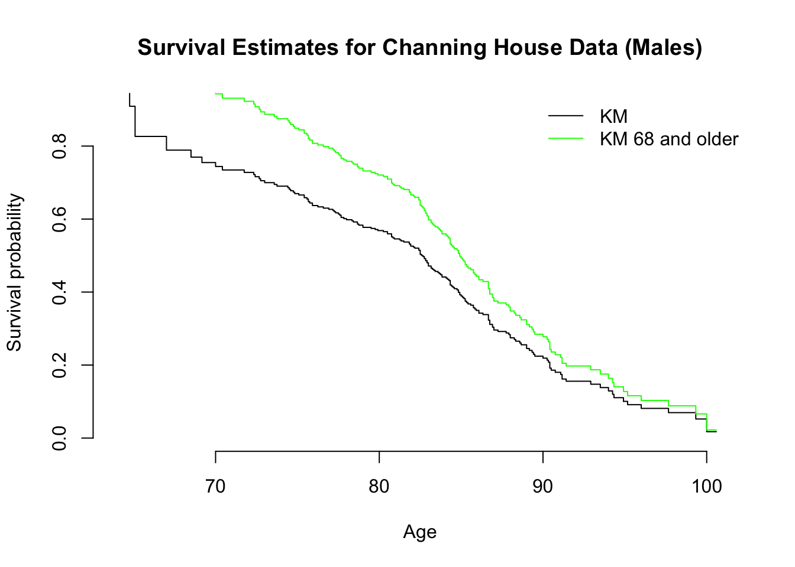
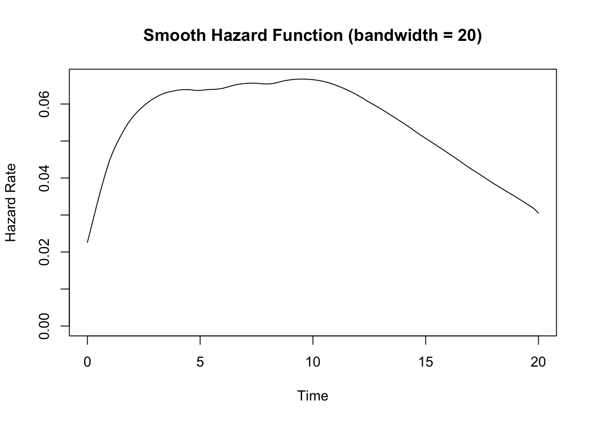

where \(n_i\) is the number of subjects at risk at time \(t_i\), and \(d_i\) is the number of individuals who fail at that time.
2.2 Example Data and Calculation: Gastric Cancer
Let’s work through the Kaplan-Meier calculation using the Gastric Cancer Survival Data (see page 6 in the book, section 1.4, example 1.2 - Xelox in patients with advanced gastric center).
The data is loaded with the asaur package
A single-arm trial = everyone in the study gets the same treatment (here, XELOX). No control group or comparison arm (like placebo or standard therapy).
Phase II - mid-stage study where all participants get XELOX chemo; researchers tracked survival outcomes to decide if it’s worth moving to a larger, controlled Phase III trial.
The Delta variable tell us whether the event occurred or not (1=dead).
Note the confidence intervals are set to False here.
n = 48 → total number of patients in the dataset (the trial enrolled 48).
Events = 32 → the number of patients who experienced the event of interest.
About 10.3 months, 50% of patients had experienced progression or death.
# Load required librarieslibrary(survival)library(muhaz)library(asaur)library(boot)# see example 1.2timeMonths <- gastricXelox$timeWeeks*7/30.25delta <- gastricXelox$delta# Create survival objectresult.km <-survfit(Surv(timeMonths, delta) ~1, conf.type="none")print(result.km)
Call: survfit(formula = Surv(timeMonths, delta) ~ 1, conf.type = "none")
n events median
[1,] 48 32 10.3
plot(result.km, conf.int=F, mark="|", xlab="Time in months",ylab="Survival probability")

2.3 Confidence Intervals (CI)
There are several approaches to constructing confidence intervals for the Kaplan-Meier estimator.
Each with different properties and advantages.
Plain (can be negative!!!)
Log
Log-Log
2.3.1 Plain (Linear) Confidence Intervals
The most straightforward approach uses the delta method to obtain the variance of \(\hat{S}(t)\) directly:
The plain confidence interval has a fundamental problem: it can extend below 0 or above 1, which is nonsensical for probabilities. This occurs because:
The normal approximation may be poor, especially with small sample sizes
The survival function is bounded between 0 and 1, but the normal distribution is unbounded
The distribution of \(\hat{S}(t)\) can be quite skewed, especially near the tails
2.3.3 Log Transformation
An improvement uses the log transformation of \(\hat{S}(t)\):
Comparison of Kaplan-Meier and Smoothed Survival Estimates
7 Left Truncation
Left truncation occurs when subjects can only be observed after a certain time point.
Requires modification of the Kaplan-Meier estimator where subjects enter the risk set at their truncation time.
7.1 Channing House Example
Collection of survival data from the Channing House retirement home in Palo Alto, California, collected between 1964 and 1975.
It records the age at entry and at death or exit (due to leaving or being alive at the study’s end) for 97 men and 365 women, focusing on differences in survival between sexes after accounting for age.
The data is used for survival analysis and features left truncation (residents entered at different ages, so their pre-Channing House lifetimes were not observed).
Also right censoring (some residents were still alive at the study’s end).
# We will use the channing dataset - loaded with 'boot' earlier# Convert ages from months to yearschanning$entryYears <- channing$entry /12channing$exitYears <- channing$exit /12# Check sex codingcat("Sex coding in dataset:\n")
Sex coding in dataset:
#print(table(channing$sex))# Filter for males using text matchingcat("Age range at entry:", range(channing$entryYears), "\n")
Age range at entry: 61.08333 95
cat("Age range at exit:", range(channing$exitYears), "\n")
Age range at exit: 64.75 100.5833
# Standard Kaplan-Meier with left truncationresult.km.standard <-survfit(Surv(entryYears, exitYears, cens, type ="counting") ~1, data = channing)# Conditional on reaching age 68result.km.68<-survfit(Surv(entryYears, exitYears, cens, type ="counting") ~1, data = channing,start.time =68)# Plot all three estimatesplot(result.km.standard, xlim =c(64, 101), xlab ="Age",ylab ="Survival probability", conf.int =FALSE,main ="Survival Estimates for Channing House Data (Males)")lines(result.km.68, col ="green", conf.int =FALSE)legend("topright", legend =c("KM", "KM 68 and older"),lty =1, col =c("black", "green"))

# Print summariescat("\n=== Standard KM with left truncation ===\n")
=== Standard KM with left truncation ===
print(result.km.standard)
Call: survfit(formula = Surv(entryYears, exitYears, cens, type = "counting") ~
1, data = channing)
5 observations deleted due to missingness
records n.max n.start events median 0.95LCL 0.95UCL
[1,] 457 202 11 175 82.7 74.8 85.8
cat("\n=== KM conditional on age 68+ ===\n")
=== KM conditional on age 68+ ===
print(result.km.68)
Call: survfit(formula = Surv(entryYears, exitYears, cens, type = "counting") ~
1, data = channing, start.time = 68)
5 observations deleted due to missingness
records n.max n.start events median 0.95LCL 0.95UCL
[1,] 451 202 36 172 84.9 83.8 86.7
# Remove rows with NA values in key variableschanning <- channing[complete.cases(channing$entryYears, channing$exitYears, channing$cens), ]# Check for problematic observations where exit <= entrycat("Observations where exit <= entry:\n")
# Create age group based on entry agechanning$ageGroup <-ifelse(channing$entryYears >=75, "75+ at entry", "Under 75 at entry")# Check the distributioncat("Age group distribution:\n")
Age group distribution:
print(table(channing$ageGroup))
75+ at entry Under 75 at entry
231 226
# Survival analysis by age group with left truncationresult.km.byage <-survfit(Surv(entryYears, exitYears, cens, type ="counting") ~ ageGroup, data = channing)# Plot comparisonplot(result.km.byage, xlim =c(64, 101), xlab ="Age",ylab ="Survival probability", conf.int =FALSE,col =c("red", "blue"),lty =c(1, 1),lwd =2,main ="Survival by Entry Age: Channing House Data")legend("topright", legend =c("Under 75 at entry", "75+ at entry"),col =c("red", "blue"),lty =c(1, 1),lwd =2)
# Print summaries for each groupcat("\n=== Survival by Entry Age Group ===\n")
=== Survival by Entry Age Group ===
print(result.km.byage)
Call: survfit(formula = Surv(entryYears, exitYears, cens, type = "counting") ~
ageGroup, data = channing)
records n.max n.start events median 0.95LCL 0.95UCL
ageGroup=75+ at entry 231 125 25 111 86.8 85.6 88.7
ageGroup=Under 75 at entry 226 172 11 64 82.4 74.8 NA
7.2 What do we see from the results?
231 people entered at 75+, 226 entered under 75 (well-balanced groups)
Median survival age: 86.8 years for 75+ entry group vs 82.4 years for under 75 group
More events (deaths) in the 75+ group (111 vs 64)
Be careful!!!
Left truncation can create complex interpretational challenges in survival analysis
The “better” survival in the 75+ group might reflect selection effects rather than true differences in longevity.
Selection bias: People who entered at 75+ had to survive to at least 75 to be observed, so they represent a subset who were already “survivors”
Different risk periods: The under 75 group includes people who entered much younger and were observed through more of their life course
Survivor effect: The 75+ entry group might represent individuals with particularly good health/genetics who lived long enough to enter the retirement home at advanced ages
8 Key Takeaways
Kaplan-Meier estimator is the most widely used nonparametric survival function estimator
Confidence intervals should use the complementary log-log transformation for better properties
Median survival is the time when the survival function first drops to 0.5 or below
Smoothed hazard functions provide better visualization than step functions
Left truncation requires careful handling to avoid bias in survival estimates
8.1 Additional Notes
The bshazard package provides B-spline based smoothing for hazard functions
Other percentiles can be estimated similarly to the median using: \[\hat{t}_p = \inf\{t : \hat{S}(t) \leq 1-p\}\]
Simultaneous confidence bands are available in the kmconfband package
Right truncation is more complex and requires specialized methods like those in the DTDA package
8.2 Exercises
8.2.1 Exercise 3.1
Find the median survival and 95% confidence interval from the example data. Explain why the upper limit might be undefined.
# The upper confidence limit is undefined (NA) when the upper confidence # band for the survival curve never drops to 0.5
8.2.2 Exercise 3.2
Find the first and third quartiles for the gastric cancer data with 95% confidence intervals.
# Quantiles for gastric cancer dataquantile(result.km, probs =c(0.25, 0.75))
$quantile
25 75
4.165289 NA
$lower
25 75
2.545455 14.809917
$upper
25 75
6.479339 NA
# Note: Quartiles are times when S(t) = 0.75 (first quartile) and S(t) = 0.25 (third quartile)
8.2.3 Exercise 3.3
Create a smooth hazard function estimate with bandwidth 20 and explain any multiple peaks.
# Already created in the main text with bw.smooth = 20plot(result.smooth, xlab ="Time", ylab ="Hazard Rate",main ="Smooth Hazard Function (bandwidth = 20)")

Smooth Hazard with Bandwidth 20
# Multiple peaks could indicate:# 1. Different risk periods in disease progression# 2. Treatment effects wearing off# 3. Heterogeneity in patient populations# 4. Artifacts from smoothing procedure
8.2.4 Exercise 3.4
Compare left-truncated vs. non-truncated estimates and discuss potential bias.
# This comparison shows how ignoring left truncation can lead to biased estimates# The non-truncated estimate may underestimate survival at younger ages# because individuals who died young were never observed in the study